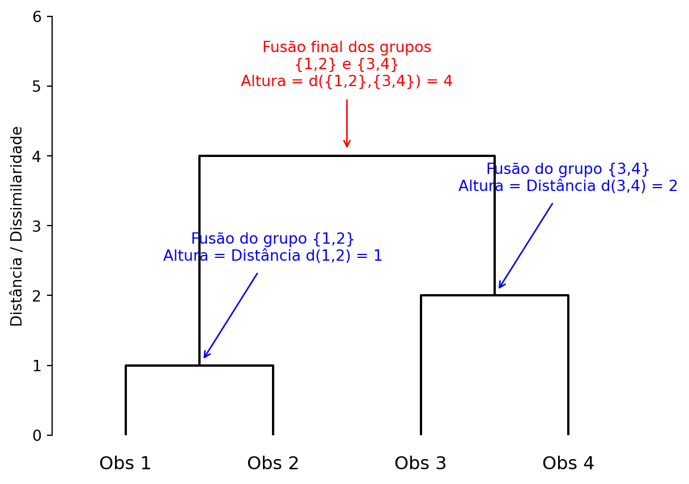
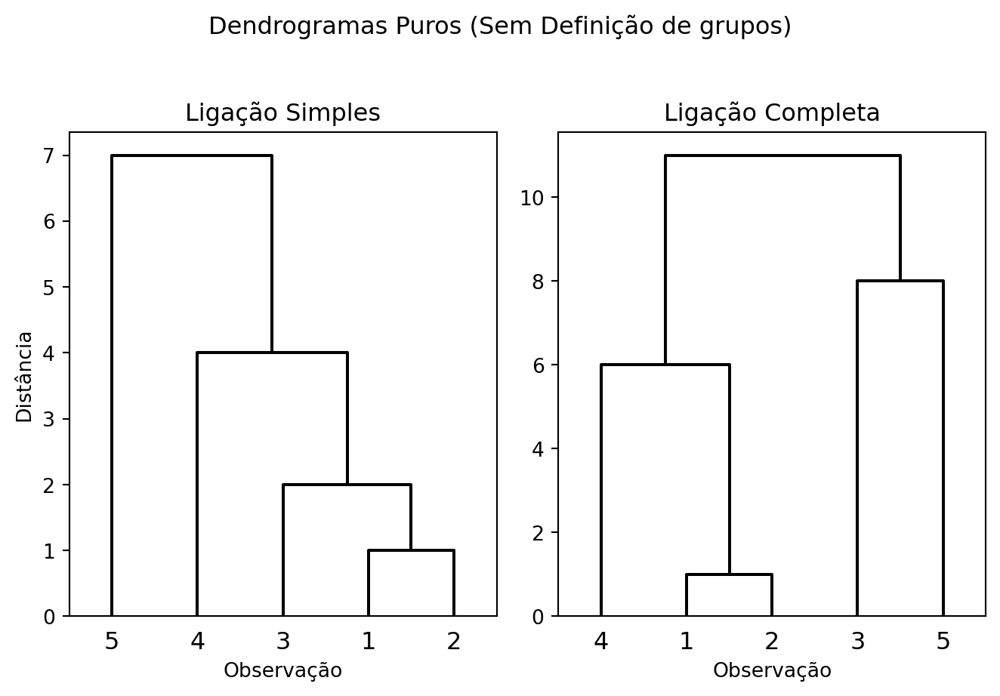
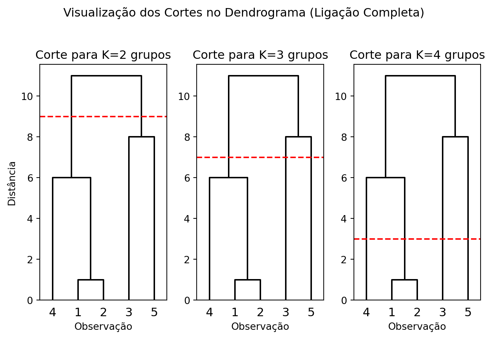

9 Análise de Agrupamentos
A Análise de Agrupamentos, ou Análise de Clusters, é uma técnica exploratória multivariada cujo objetivo é particionar um conjunto de observações em subgrupos (os clusters). A partição é feita de tal forma que as observações dentro de um mesmo grupo sejam semelhantes entre si, enquanto observações em grupos diferentes sejam o mais distintas possível.
Diferentemente de outras técnicas como a análise de regressão ou a análise discriminante, a análise de agrupamentos é um método de aprendizagem não supervisionada. Isso significa que não temos uma variável resposta ou rótulos pré-definidos para os grupos; o objetivo é descobrir a estrutura de agrupamentos inerente aos próprios dados.
O princípio fundamental é a maximização da homogeneidade intra-grupo e, ao mesmo tempo, a maximização da heterogeneidade entre grupos.
Diversas técnicas apresentadas nesse capítulo dependem da definição de uma medida para quantificar o quão semelhantes ou diferentes as observações são. Essa medida é formalizada como uma medida de dissimilaridade ou distância. Uma discussão detalhada sobre as diferentes métricas de distância pode ser encontrada na Capítulo 6.
Definição 9.1 Dado um conjunto de dados com \(n\) observações \(\mathbf{X} = \{\mathbf{x}_1, \dots, \mathbf{x}_n\}\), um agrupamento (ou clustering) é uma partição de \(\mathbf{X}\) em \(K\) subconjuntos disjuntos \(C_1, C_2, \dots, C_K\), tal que:
- \(C_k \neq \emptyset\) para \(k=1, \dots, K\)
- \(C_k \cap C_j = \emptyset\) para \(k \neq j\)
- \(\bigcup_{k=1}^{K} C_k = \mathbf{X}\)
Para cada grupo \(C_k\), definimos:
- Tamanho: \(n_k = \#C_k\), o número de observações no grupo.
- Centroide: \(\bar{\mathbf{x}}_k = \frac{1}{n_k} \sum_{\mathbf{x}_i \in C_k} \mathbf{x}_i\), o centóide, ou vetor de médias, do grupo.
9.1 Decomposição da Variabilidade
Podemos formalizar o critério de “boa separação” dos grupos através de uma decomposição da variabilidade total dos dados, análoga à Análise de Variância (ANOVA).
Definição 9.2 Dado um conjunto de \(n\) observações e uma partição em \(K\) grupos \(C_1, \dots, C_K\):
Soma de Quadrados Total (SQT): Mede a dispersão total dos dados em torno da média geral \(\bar{\mathbf{x}}\). \[ SQT = \sum_{i=1}^{n} (\mathbf{x}_i - \bar{\mathbf{x}})'(\mathbf{x}_i - \bar{\mathbf{x}}) \]
Soma de Quadrados Intra-grupos (SQI): Mede a dispersão dentro dos grupos. É a soma das dispersões de cada observação em relação ao centroide do seu próprio grupo, \(\bar{\mathbf{x}}_k\). Também é conhecida como Within-Cluster Sum of Squares (WCSS). \[ SQI = \sum_{k=1}^{K} \sum_{\mathbf{x}_i \in C_k} (\mathbf{x}_i - \bar{\mathbf{x}}_k)'(\mathbf{x}_i - \bar{\mathbf{x}}_k) \]
Soma de Quadrados Entre-grupos (SQE): Mede a dispersão entre os centroides dos grupos em relação à média geral. \[ SQE = \sum_{k=1}^{K} n_k (\bar{\mathbf{x}}_k - \bar{\mathbf{x}})'(\bar{\mathbf{x}}_k - \bar{\mathbf{x}}) \] Onde \(n_k\) é o número de observações no grupo \(C_k\).
O objetivo da análise de agrupamentos pode ser visto como encontrar a partição que minimiza a SQI (grupos coesos) e maximiza a SQE (grupos separados).
Teorema 9.1 A soma de quadrados total pode ser decomposta como a soma da variabilidade dentro dos grupos e entre os grupos.
\[ SQT = SQI + SQE \]
Comprovação. A prova parte da decomposição do desvio de uma observação \(\mathbf{x}_i \in C_k\) em relação à média geral \(\bar{\mathbf{x}}\):
\[ (\mathbf{x}_i - \bar{\mathbf{x}}) = (\mathbf{x}_i - \bar{\mathbf{x}}_k) + (\bar{\mathbf{x}}_k - \bar{\mathbf{x}}) \]
Elevando ao quadrado (no sentido de produto vetorial), temos:
\[ (\mathbf{x}_i - \bar{\mathbf{x}})'(\mathbf{x}_i - \bar{\mathbf{x}}) = [(\mathbf{x}_i - \bar{\mathbf{x}}_k) + (\bar{\mathbf{x}}_k - \bar{\mathbf{x}})]'[(\mathbf{x}_i - \bar{\mathbf{x}}_k) + (\bar{\mathbf{x}}_k - \bar{\mathbf{x}})] \]
\[ = (\mathbf{x}_i - \bar{\mathbf{x}}_k)'(\mathbf{x}_i - \bar{\mathbf{x}}_k) + (\bar{\mathbf{x}}_k - \bar{\mathbf{x}})'(\bar{\mathbf{x}}_k - \bar{\mathbf{x}}) + 2(\mathbf{x}_i - \bar{\mathbf{x}}_k)'(\bar{\mathbf{x}}_k - \bar{\mathbf{x}}) \]
Agora, somamos sobre todas as observações \(i=1, \dots, n\). Para fazer isso, somamos primeiro dentro de cada grupo \(k\) e depois somamos os resultados sobre todos os grupos:
\[ SQT = \sum_{k=1}^{K} \sum_{\mathbf{x}_i \in C_k} (\mathbf{x}_i - \bar{\mathbf{x}})'(\mathbf{x}_i - \bar{\mathbf{x}}) \]
\[ = \sum_{k=1}^{K} \sum_{\mathbf{x}_i \in C_k} (\mathbf{x}_i - \bar{\mathbf{x}}_k)'(\mathbf{x}_i - \bar{\mathbf{x}}_k) + \sum_{k=1}^{K} \sum_{\mathbf{x}_i \in C_k} (\bar{\mathbf{x}}_k - \bar{\mathbf{x}})'(\bar{\mathbf{x}}_k - \bar{\mathbf{x}}) + \sum_{k=1}^{K} \sum_{\mathbf{x}_i \in C_k} 2(\mathbf{x}_i - \bar{\mathbf{x}}_k)'(\bar{\mathbf{x}}_k - \bar{\mathbf{x}}) \]
Analisando cada termo:
- O primeiro termo é, por definição, a Soma de Quadrados Intra-grupos (SQI).
- No segundo termo, a expressão \((\bar{\mathbf{x}}_k - \bar{\mathbf{x}})'(\bar{\mathbf{x}}_k - \bar{\mathbf{x}})\) é constante para todas as \(n_k\) observações no grupo \(C_k\). Portanto, a soma interna resulta em \(n_k (\bar{\mathbf{x}}_k - \bar{\mathbf{x}})'(\bar{\mathbf{x}}_k - \bar{\mathbf{x}})\). Somar sobre \(k\) nos dá a Soma de Quadrados Entre-grupos (SQE).
- Para o terceiro termo (o termo cruzado), podemos reescrevê-lo como: \[ 2 \sum_{k=1}^{K} \left[ \left( \sum_{\mathbf{x}_i \in C_k} (\mathbf{x}_i - \bar{\mathbf{x}}_k) \right)' (\bar{\mathbf{x}}_k - \bar{\mathbf{x}}) \right] \] Pela definição do centroide \(\bar{\mathbf{x}}_k\), a soma dos desvios em torno dele dentro de um grupo é zero: \(\sum_{\mathbf{x}_i \in C_k} (\mathbf{x}_i - \bar{\mathbf{x}}_k) = \mathbf{0}\). Portanto, todo o terceiro termo é igual a zero.
Juntando os resultados, obtemos \(SQT = SQI + SQE\).
A prova deste teorema mostra que a variabilidade total é conservada e apenas particionada, de forma que minimizar a SQI é equivalente a maximizar a SQE.
9.2 Agrupamentos Hierárquicos
Os métodos de agrupamento hierárquico criam uma sequência de partições aninhadas, que pode ser representada visualmente por uma árvore chamada dendrograma. Existem duas abordagens principais:
- Aglomerativa (Bottom-Up): Começa com cada observação em seu próprio grupo e, a cada passo, funde os dois grupos mais próximos até que reste apenas um único grupo contendo todas as observações.
- Divisiva (Top-Down): Começa com todas as observações em um único grupo e, a cada passo, divide um grupo em dois até que cada observação esteja em seu próprio grupo.
Nota
Devido a dificuldades de implementação, agrupamentos divisivos raramente são utilizados na prática. Por esse motivo, os exemplos presentes nesta seção consideram apenas agrupamentos aglomerativos.
9.2.1 Métodos de Ligação (Linkage)
Enquanto as medidas de dissimilaridade retratam a distância entre observações, precisamos de uma regra que define a distância entre dois grupos. Para isso definimos alguns métodos de ligação populares a seguir.
Ligação Simples (Single Linkage): A distância entre dois grupos é a distância mínima entre quaisquer dois pontos dos grupos. Tende a produzir grupos “alongados” e é sensível a ruído. \[ d(A, B) = \min_{\mathbf{a} \in A, \mathbf{b} \in B} d(\mathbf{a}, \mathbf{b}) \]
Ligação Completa (Complete Linkage): A distância é o máximo da distância entre quaisquer dois pontos. Produz grupos mais compactos e esféricos. \[ d(A, B) = \max_{\mathbf{a} \in A, \mathbf{b} \in B} d(\mathbf{a}, \mathbf{b}) \]
Ligação Média (Average Linkage): A distância é a média de todas as distâncias entre os pares de pontos dos dois grupos. É um meio-termo entre a simples e a completa. \[ d(A, B) = \frac{1}{n_A n_B} \sum_{\mathbf{a} \in A} \sum_{\mathbf{b} \in B} d(\mathbf{a}, \mathbf{b}) \]
Método de Ward: Este método se baseia em um critério de minimização da variância. A cada passo do algoritmo aglomerativo, ele funde o par de grupos que leva ao menor aumento possível na Soma de Quadrados Intra-grupos (SQI). O objetivo é encontrar, a cada passo, a fusão mais “econômica” em termos de perda de coesão interna.
Suponha que estejamos considerando fundir dois grupos, \(C_i\) e \(C_j\). O aumento na SQI, que denotamos por \(\Delta(C_i, C_j)\), é a diferença entre a SQI do novo grupo fundido (\(C_{ij}\)) e a soma das SQIs dos grupos individuais antes da fusão.
\[ \Delta(C_i, C_j) = \text{SQI}(C_{ij}) - (\text{SQI}(C_i) + \text{SQI}(C_j)) \]
A SQI para o novo grupo \(C_{ij} = C_i \cup C_j\) é \(\sum_{\mathbf{x} \in C_{ij}} (\mathbf{x} - \bar{\mathbf{x}}_{ij})'(\mathbf{x} - \bar{\mathbf{x}}_{ij})\), onde \(\mathbf{x}_{ij}\) é o centroide do novo grupo. Podemos reescrever essa soma como: \[ \sum_{\mathbf{x} \in C_i} (\mathbf{x} - \bar{\mathbf{x}}_{ij})'(\mathbf{x} - \bar{\mathbf{x}}_{ij}) + \sum_{\mathbf{x} \in C_j} (\mathbf{x} - \bar{\mathbf{x}}_{ij})'(\mathbf{x} - \bar{\mathbf{x}}_{ij}) \] Usando a mesma lógica da decomposição da variância, podemos mostrar que \(\sum_{\mathbf{x} \in C_i} (\mathbf{x} - \bar{\mathbf{x}}_{ij})'(\mathbf{x} - \bar{\mathbf{x}}_{ij}) = \text{SQI}(C_i) + n_i (\bar{\mathbf{x}}_i - \bar{\mathbf{x}}_{ij})'(\bar{\mathbf{x}}_i - \bar{\mathbf{x}}_{ij})\).
Aplicando o resultado para ambos os termos, a SQI do novo grupo é: \[ \text{SQI}(C_{ij}) = \text{SQI}(C_i) + \text{SQI}(C_j) + n_i (\bar{\mathbf{x}}_i - \bar{\mathbf{x}}_{ij})'(\bar{\mathbf{x}}_i - \bar{\mathbf{x}}_{ij}) + n_j (\bar{\mathbf{x}}_j - \bar{\mathbf{x}}_{ij})'(\bar{\mathbf{x}}_j - \bar{\mathbf{x}}_{ij}) \] Portanto, o aumento na SQI é: \[ \Delta(C_i, C_j) = n_i (\bar{\mathbf{x}}_i - \bar{\mathbf{x}}_{ij})'(\bar{\mathbf{x}}_i - \bar{\mathbf{x}}_{ij}) + n_j (\bar{\mathbf{x}}_j - \bar{\mathbf{x}}_{ij})'(\bar{\mathbf{x}}_j - \bar{\mathbf{x}}_{ij}) \] Substituindo \(\bar{\mathbf{x}}_{ij} = \frac{n_i\bar{\mathbf{x}}_i + n_j\bar{\mathbf{x}}_j}{n_i+n_j}\) e simplificando a álgebra, chegamos a: \[ \Delta(C_i, C_j) = \frac{n_i n_j}{n_i + n_j} (\bar{\mathbf{x}}_i - \bar{\mathbf{x}}_j)'(\bar{\mathbf{x}}_i - \bar{\mathbf{x}}_j) \]
A fórmula final nos dá uma maneira eficiente de calcular o critério de Ward. A cada passo, o algoritmo calcula \(\Delta(C_i, C_j)\) para todos os pares de grupos e realiza a fusão para o par que tiver o menor valor. Note que a fórmula depende da distância euclidiana entre centroides, por esse motivo, o método de Ward tende a produzir grupos de tamanho semelhante e formato esférico.
9.2.2 O Dendrograma
O dendrograma é a principal ferramenta de visualização para o agrupamento hierárquico. Ele mostra como, passo a passo, as observações são fundidas em grupos. O eixo Y representa a distância ou dissimilaridade em que as fusões ocorrem. Quanto mais alta a “ponte” que une dois grupos, mais diferentes eles são.
O gráfico abaixo, gerado a partir de um exemplo simples de 4 observações, mostra a anatomia de um dendrograma.
O exemplo abaixo apresenta os dendogramas de maneira prática, além de exemplificar também como a função de ligação escolhida impacta no agrupamento formado.
Exemplo 9.1 Vamos analisar o comportamento dos métodos de ligação com a matriz de 5x5 abaixo.
\[ \mathbf{D} = \left( \begin{array}{c|ccccc} & \mathbf{1} & \mathbf{2} & \mathbf{3} & \mathbf{4} & \mathbf{5} \\ \hline \mathbf{1} & 0 & & & & \\ \mathbf{2} & 1 & 0 & & & \\ \mathbf{3} & 8 & 2 & 0 & & \\ \mathbf{4} & 6 & 4 & 11 & 0 & \\ \mathbf{5} & 7 & 9 & 8 & 7 & 0 \\ \end{array} \right) \]
1. Usando a Ligação Simples (Single Linkage)
- Passo 1: A menor distância na matriz é
d(1,2) = 1. Fundimos{1,2}na altura 1. - Passo 2: A distância do novo grupo
{1,2}para{3}émin(d(1,3), d(2,3)) = min(8, 2) = 2. Todas as outras distâncias entre grupos ou pontos restantes são maiores que 2. Assim, fundimos{1,2}com{3}na altura 2. - Passo 3: A distância de
{1,2,3}para{4}émin(d(1,4), d(2,4), d(3,4)) = min(6, 4, 11) = 4. Esta é a próxima menor distância, então fundimos{1,2,3}com{4}na altura 4. - Passo 4: A distância de
{1,2,3,4}para{5}émin(d(1,5), d(2,5), d(3,5), d(4,5)) = min(7, 9, 8, 7) = 7. Fundimos o último ponto na altura 7. - Resultado: O método cria uma longa cadeia:
((({1,2},3),4),5).
2. Usando a Ligação Completa (Complete Linkage)
- Passo 1: A fusão inicial é a mesma:
{1,2}(altura 1). - Passo 2: A distância de
{1,2}para{4}émax(d(1,4), d(2,4)) = max(6, 4) = 6. Já a distância para{3}émax(d(1,3), d(2,3)) = max(8, 2) = 8. A menor distância entre os grupos existentes é 6, então fundimos{1,2}com{4}. - Passo 3: Temos os grupos
{1,2,4},{3}e{5}. A próxima menor distância entre os grupos restantes éd(3,5) = 8. Fundimos{3,5}. - Passo 4: A distância entre
{1,2,4}e{3,5}émax(d(1,3), d(1,5), d(2,3), d(2,5), d(4,3), d(4,5)) = max(8, 7, 2, 9, 11, 7) = 11. A fusão final ocorre na altura 11. - Resultado: O método cria dois grupos distintos,
({1,2,4}, {3,5}), antes da fusão final.
Os resultados são estruturalmente diferentes, como mostram os dendrogramas.
Código
import numpy as np
from scipy.cluster.hierarchy import dendrogram, linkage
from scipy.spatial.distance import squareform
import matplotlib.pyplot as plt
# Matriz de distância 5x5 do exemplo
D = np.array([
[0, 1, 8, 6, 7],
[1, 0, 2, 4, 9],
[8, 2, 0, 11, 8],
[6, 4, 11, 0, 7],
[7, 9, 8, 7, 0]
])
condensed_D = squareform(D)
labels = ['1', '2', '3', '4', '5']
fig, axes = plt.subplots(1, 2, figsize=(7, 5))
fig.suptitle('Dendrogramas Puros (Sem Definição de grupos)')
# Ligação Simples
linked_single = linkage(condensed_D, 'single')
dendrogram(linked_single, orientation='top', labels=labels, ax=axes[0], color_threshold=0, above_threshold_color='k')
axes[0].set_title('Ligação Simples')
axes[0].set_xlabel('Observação')
axes[0].set_ylabel('Distância')
# Ligação Completa
linked_complete = linkage(condensed_D, 'complete')
dendrogram(linked_complete, orientation='top', labels=labels, ax=axes[1], color_threshold=0, above_threshold_color='k')
axes[1].set_title('Ligação Completa')
axes[1].set_xlabel('Observação')
plt.tight_layout(rect=[0, 0.03, 1, 0.95])
plt.show()

O dendrograma não apenas mostra a hierarquia das fusões, mas também é a principal ferramenta para decidir o número final de grupos. A estratégia consiste em “cortar” a árvore em uma determinada altura. Todas as ramificações que estão abaixo da linha de corte constituem os grupos.
A regra geral é procurar por um corte que cruze as conexões mais longas. Uma conexão longa representa uma fusão que ocorreu a uma distância (ou aumento de SQI, no caso de Ward) muito maior do que as fusões anteriores. Isso sugere que estamos unindo grupos que são naturalmente muito diferentes entre si. Portanto, cortar a árvore logo acima dessa grande “distância de fusão” é uma escolha sensata.
A Figura 9.3 demonstra como a escolha de diferentes alturas de corte leva a diferentes números de grupos.
Código
import numpy as np
from scipy.cluster.hierarchy import dendrogram, linkage
from scipy.spatial.distance import squareform
import matplotlib.pyplot as plt
# Matriz de distância 5x5 do exemplo
D = np.array([
[0, 1, 8, 6, 7],
[1, 0, 2, 4, 9],
[8, 2, 0, 11, 8],
[6, 4, 11, 0, 7],
[7, 9, 8, 7, 0]
])
condensed_D = squareform(D)
labels = ['1', '2', '3', '4', '5']
linked_complete = linkage(condensed_D, 'complete')
fig, axes = plt.subplots(1, 3, figsize=(7, 5))
fig.suptitle('Visualização dos Cortes no Dendrograma (Ligação Completa)')
# --- Corte para K=2 ---
cut_height_k2 = 9
dendrogram(
linked_complete,
orientation='top',
labels=labels,
ax=axes[0],
color_threshold=0,
above_threshold_color='k'
)
axes[0].axhline(y=cut_height_k2, color='r', linestyle='--')
axes[0].set_title('Corte para K=2 grupos')
axes[0].set_xlabel('Observação')
axes[0].set_ylabel('Distância')
# --- Corte para K=3 ---
cut_height_k3 = 7
dendrogram(
linked_complete,
orientation='top',
labels=labels,
ax=axes[1],
color_threshold=0,
above_threshold_color='k'
)
axes[1].axhline(y=cut_height_k3, color='r', linestyle='--')
axes[1].set_title('Corte para K=3 grupos')
axes[1].set_xlabel('Observação')
# --- Corte para K=4 ---
cut_height_k4 = 3
dendrogram(
linked_complete,
orientation='top',
labels=labels,
ax=axes[2],
color_threshold=0,
above_threshold_color='k'
)
axes[2].axhline(y=cut_height_k4, color='r', linestyle='--')
axes[2].set_title('Corte para K=4 grupos')
axes[2].set_xlabel('Observação')
plt.tight_layout(rect=[0, 0.03, 1, 0.95])
plt.show()

A interpretação dos resultados para cada corte é a seguinte:
- K=2: Ao cortar o dendrograma na altura 9, obtemos dois grupos. O primeiro é
{1, 2, 4}e o segundo é{3, 5}. Esta partição representa a estrutura de mais alto nível nos dados, separando os dois grupos mais distintos. - K=3: Abaixando a linha de corte para a altura 7, o grupo
{3, 5}(que era formado na altura 8) é quebrado. O resultado são três grupos:{1, 2, 4},{3}e{5}. - K=4: Com um corte ainda mais baixo, na altura 3, quebramos o grupo
{1, 2, 4}(formado na altura 6). Os grupos resultantes são{1, 2},{4},{3}e{5}.
Observe que o primeiro grupo {1, 2} se forma em uma altura de uma unidade de distância. Já a segunda ligação, {1, 2} com {4} ocorre na altura d({1, 2}, {4})=6. Isso indica que já existe um salto na distância da ligação logo no segundo passo. Por isso, uma escolha sensível é \(K=4\).
O Eixo Vertical no Dendrograma
Para os métodos de ligação simples, completa e média o eixo vertical do dendrograma represente diretamente a distância da fusão. Já para o Método de Ward, a altura da fusão representa o aumento na Soma de Quadrados Intra-grupos (SQI) resultante da união dos dois grupos. Esse valor não é uma distância, mas sim uma medida de perda de homogeneidade.
9.2.3 Limitações do Agrupamento Hierárquico
Apesar de sua simplicidade e elegância, os métodos hierárquicos possuem limitações importantes. Uma delas é sua complexidade computacional, que cresce rapidamente para dados com muitas observações devido a grande quantidade de comparações.
Além disso, a decisão de fusão é final e não pode ser desfeita. Se um grupo inicial for inadequada, o erro se propagará por toda a hierarquia. Ou seja, o agrupamento é muito sensível à estrutura inicial. Finalmente, todos os métodos de ligação carregam suas vantagens e problemas.
Essas limitações motivam o uso de métodos não hierárquicos, como o K-médias, que abordaremos a seguir.
9.3 Agrupamento Não-Hierárquico
Diferente dos métodos hierárquicos, os métodos particionais, como o K-Médias, dividem os dados em um número \(K\) de grupos pré-especificado. O K-Médias é um dos algoritmos de agrupamento mais populares e eficientes.
O objetivo do K-Médias é particionar as \(n\) observações em \(K\) grupos de modo a minimizar a Soma de Quadrados Intra-grupos (SQI), também chamada de inércia.
\[ \text{SQI} = \sum_{k=1}^{K} \sum_{\mathbf{x}_i \in C_k} (\mathbf{x}_i - \bar{\mathbf{x}}_k)'(\mathbf{x}_i - \bar{\mathbf{x}}_k) \]
Onde \(\bar{\mathbf{x}}_k\) é o centroide (média) do grupo \(C_k\).
9.3.1 O Algoritmo K-Médias (K-Means)
O algoritmo K-médias é um processo iterativo que busca minimizar a SQI. Seus passos podem ser definidos matematicamente da seguinte forma:
Inicialização: Escolha \(K\) centroides iniciais \(\boldsymbol{\mu}_1^{(0)}, \boldsymbol{\mu}_2^{(0)}, \dots, \boldsymbol{\mu}_K^{(0)}\). Esta escolha pode ser feita selecionando \(K\) observações aleatórias do conjunto de dados.
Atribuição: Em cada iteração \(t\), atribua cada observação \(\mathbf{x}_i\) ao grupo cujo centroide é o mais próximo. Matematicamente, para cada observação \(i\), encontramos o índice do grupo \(c_i\) que minimiza a distância Euclidiana quadrada: \[ c_i^{(t)} = \arg \min_{k} (\mathbf{x}_i - \boldsymbol{\mu}_k^{(t-1)})' (\mathbf{x}_i - \boldsymbol{\mu}_k^{(t-1)}) \] Isso particiona os dados nos conjuntos \(C_1^{(t)}, \dots, C_K^{(t)}\).
Atualização: Recalcule o centroide de cada grupo como a média de todas as observações atribuídas a ele na iteração atual: \[ \boldsymbol{\mu}_k^{(t)} = \frac{1}{\# C_k^{(t)}} \sum_{\mathbf{x}_i \in C_k^{(t)}} \mathbf{x}_i \]
Repetição: Repita os passos 2 e 3 até que as atribuições dos grupos não mudem mais, ou seja, \(c_i^{(t)} = c_i^{(t-1)}\) para todas as observações \(i\).
O grande problema do método K-médias é a escolha dos centroides iniciais. O algoritmo tem a garantia de convergir, mas dependendo das condições iniciais pode chegar a um mínimo local, e não necessariamente o mínimo global da SQI. Uma opção comum é executar o algoritmo várias vezes com diferentes inicializações e escolher o resultado com a menor SQI.
A necessidade de pré-especificar o número de grupos, \(K\), também pode ser uma desvantagem. Para contornar o problema, é comum executar o algoritmo para uma gama de valores de \(K\) e calcular a Soma de Quadrados Intra-grupos (SQI) em cada caso. A ideia é escolher \(K\) tal que a SQI seja baixa, mas sendo parcimonioso com o número de grupos. Vale lembrar que a SQI é inversamente proporcional a K – se \(K=1\), a SQI é máxima e se \(K=n\) a SQI é zero. Na prática, aumentamos \(K\) progressivamente observando os decréscimo na SQI, seguimos aumentando \(K\) enquanto esse decréscimo for grande.
A seguir, definimos um procedimento mais robusto, que soluciona os problemas mencionados combinando diferentes métodos de agrupamento.
9.3.2 Procedimento sugerido para análise de agrupamentos
Levando em consideração as vantagens e desvantagens dos agrupamentos hierárquicos e de K-médias, podemos definir um procedimento que simplifica as escolhas durante um problema prático de análise de agrupamentos.
- Inicie com um agrupamento hierárquico. O método de Ward costuma ser uma boa primeira opção, no entanto, experimente também outros métodos de ligação conforme necessário.
- Observe o dendograma para escolher o corte que seja mais plausível. Esse corte determina um número de grupos ótimo \(K*\).
- Calcule o centroide para cada um dos grupos obtidos via agrupamento hierárquico \(\mu_1, \cdots, \mu_K\).
- Utilize os centoides obtidos como centroides iniciais para o método K-médias com \(K*\) grupos.
Exemplificamos esse procedimento com dados reais no Capítulo 12.
9.4 Agrupamento Baseado em Modelos
Uma abordagem mais avançada e flexível é o agrupamento baseado em modelos. A ideia central é assumir que os dados são gerados a partir de uma mistura de distribuições de probabilidade, onde cada componente da mistura corresponde a um grupo.
O modelo mais comum é o Modelo de Mistura Gaussiana (Gaussian Mixture Model, GMM). Ele assume que cada grupo segue uma distribuição normal multivariada. A densidade de probabilidade de todo o conjunto de dados é uma soma ponderada de \(K\) densidades Gaussianas:
\[ p(\mathbf{x}) = \sum_{k=1}^{K} \pi_k \mathcal{N}(\mathbf{x} | \boldsymbol{\mu}_k, \mathbf{\Sigma}_k) \]
Onde, para cada grupo \(k\):
- \(\pi_k\): é o peso da mistura (a probabilidade de uma observação pertencer ao grupo \(k\)).
- \(\boldsymbol{\mu}_k\): é o vetor de médias (o centroide do grupo).
- \(\mathbf{\Sigma}_k\): é a matriz de covariâncias (descreve a forma e orientação do grupo).
9.4.1 O Algoritmo de Expectation-Maximization (EM)
Os parâmetros do GMM (\(\pi_k, \boldsymbol{\mu}_k, \mathbf{\Sigma}_k\)) são estimados usando o algoritmo de Expectation-Maximization (EM).
O algoritmo é um processo iterativo que alterna entre dois passos:
Inicialização: Inicialize os parâmetros do modelo (\(\pi_k, \boldsymbol{\mu}_k, \mathbf{\Sigma}_k\)) para cada grupo \(k=1, \dots, K\). Isso pode ser feito de forma aleatória ou usando o resultado de um algoritmo mais simples, como o K-médias.
Passo-E (Expectation): Nesta etapa, calculamos a “responsabilidade” de cada grupo \(k\) por cada observação \(\mathbf{x}_i\). A responsabilidade, denotada por \(p_{ik}\), é a probabilidade posterior de que a observação \(\mathbf{x}_i\) tenha sido gerada pela componente \(k\) da mistura, dados os parâmetros atuais. Usando a regra de Bayes, a responsabilidade é calculada como: \[ p_{ik} = \frac{\pi_k \mathcal{N}(\mathbf{x}_i | \boldsymbol{\mu}_k, \mathbf{\Sigma}_k)}{\sum_{j=1}^{K} \pi_j \mathcal{N}(\mathbf{x}_i | \boldsymbol{\mu}_j, \mathbf{\Sigma}_j)} \] Essencialmente, para cada ponto, calculamos a probabilidade de ele pertencer a cada um dos \(K\) grupos.
Passo-M (Maximization): Nesta etapa, usamos as responsabilidades calculadas para reestimar os parâmetros do modelo, maximizando a verossimilhança esperada. As atualizações são:
Novos pesos da mistura: O novo peso \(\pi_k^{\text{novo}}\) é a proporção média de responsabilidade do grupo \(k\) sobre todas as observações. \[ \pi_k^{\text{novo}} = \frac{N_k}{n}, \quad \text{onde } N_k = \sum_{i=1}^{n} p_{ik} \]
Novas médias: A nova média \(\boldsymbol{\mu}_k^{\text{novo}}\) é uma média ponderada de todas as observações, onde os pesos são as responsabilidades. \[ \boldsymbol{\mu}_k^{\text{novo}} = \frac{1}{N_k} \sum_{i=1}^{n} p_{ik} \mathbf{x}_i \]
Novas covariâncias: A nova matriz de covariâncias \(\mathbf{\Sigma}_k^{\text{novo}}\) é uma média ponderada das covariâncias, centrada na nova média. \[ \mathbf{\Sigma}_k^{\text{novo}} = \frac{1}{N_k} \sum_{i=1}^{n} p_{ik} (\mathbf{x}_i - \boldsymbol{\mu}_k^{\text{novo}})(\mathbf{x}_i - \boldsymbol{\mu}_k^{\text{novo}})' \]
Repetição: Os passos E e M são repetidos até que a log-verossimilhança do modelo, \(\ln p(\mathbf{X} | \pi, \boldsymbol{\mu}, \mathbf{\Sigma}) = \sum_{i=1}^{n} \ln \left( \sum_{k=1}^{K} \pi_k \mathcal{N}(\mathbf{x}_i | \boldsymbol{\mu}_k, \mathbf{\Sigma}_k) \right)\), convirja para um valor estável.
9.4.2 Vantagens do Agrupamento Baseado em Modelos
- Agrupamento “Suave”: O GMM fornece uma probabilidade de pertencimento a cada grupo para cada observação, em vez de uma atribuição “dura” (tudo ou nada) como o K-Médias.
- Flexibilidade de Formato: Ao permitir que cada grupo tenha sua própria matriz de covariâncias \(\mathbf{\Sigma}_k\), os GMMs podem identificar grupos com diferentes formas (elípticas) e orientações, enquanto o K-Médias assume implicitamente que os grupos são esféricos.
- Seleção de Modelo Criteriosa: A natureza estatística do método permite o uso de critérios de informação, como o Critério de Informação Bayesiano (BIC) ou o Critério de Informação de Akaike (AIC), para selecionar o número ideal de grupos \(K\) e a estrutura da matriz de covariâncias de forma mais objetiva. O modelo com o menor valor de BIC é geralmente preferido.
9.5 Índices de v1alidação de agrupamentos
Uma das perguntas mais importantes na análise de grupo é “qual o número ideal de grupos?”. Embora o procedimento que combina o método hierárquico com o K-médias ajude a guiar essa escolha, existem diversas métricas quantitativas que avaliam a qualidade de uma partição de grupos, independentemente do método utilizado para obtê-la. Esses índices nos permitem comparar os resultados para diferentes valores de \(K\) e escolher o que for estatisticamente mais robusto.
9.5.1 Método da Silhueta
A análise de silhueta é uma das técnicas mais populares. Ela mede o quão bem cada observação se encaixa em seu grupo em comparação com outros grupos. O coeficiente de silhueta para uma única observação \(i\) é:
\[ s(i) = \frac{b(i) - a(i)}{\max\{a(i), b(i)\}} \]
Onde: - \(a(i)\): A distância média de \(i\) para todas as outras observações no mesmo grupo (coesão). - \(b(i)\): A distância média de \(i\) para todas as observações no grupo vizinho mais próximo (separação).
O valor de \(s(i)\) varia de -1 a 1. Para um dado \(K\), calculamos o coeficiente de silhueta médio para todas as observações. O valor de \(K\) que maximiza a pontuação média da silhueta é considerado o ideal.
9.5.2 Índice de Calinski-Harabasz
Também conhecido como Critério da Razão de Variâncias, este índice avalia a qualidade do agrupamento pela razão entre a dispersão entre os grupos e a dispersão intra-grupo. A fórmula é:
\[ CH(K) = \frac{SQE / (K-1)}{SQI / (n-K)} \]
Onde \(SQE\) é a Soma de Quadrados Entre-grupos, \(SQI\) é a Soma de Quadrados Intra-grupos, \(n\) é o número total de observações e \(K\) é o número de grupos.
Intuitivamente, um bom agrupamento tem uma alta dispersão entre os grupos (SQE alta) e uma baixa dispersão dentro dos grupos (SQI baixa). Portanto, procuramos o valor de \(K\) que maximiza o índice de Calinski-Harabasz.
9.5.3 Índice de Davies-Bouldin
Este índice mede a “similaridade” média de cada grupo com seu grupo mais semelhante. A similaridade entre dois grupos \(C_i\) e \(C_j\) é definida como:
\[ R_{ij} = \frac{s_i + s_j}{d_{ij}} \]
Onde \(s_i\) é a dispersão média dentro do grupo \(i\) (por exemplo, a distância média de cada ponto ao centroide) e \(d_{ij}\) é a distância entre os centroides dos grupos \(i\) e \(j\).
Para cada grupo \(i\), encontramos o grupo \(j\) que maximiza \(R_{ij}\). O índice de Davies-Bouldin é a média desses valores máximos sobre todos os grupos:
\[ DB(K) = \frac{1}{K} \sum_{i=1}^{K} \max_{j \neq i} (R_{ij}) \]
Um valor baixo de \(DB(K)\) indica que os grupos estão bem separados e compactos. Portanto, procuramos o valor de \(K\) que minimiza o índice de Davies-Bouldin.
Em resumo, a escolha de \(K\) deve ser guiada por uma combinação dessas ferramentas, a análise do dendrograma e, mais importante, o contexto do problema. Se os grupos resultantes não forem interpretáveis ou úteis, o valor de \(K\) deve ser reconsiderado.
9.6 Interpretações em análises de agrupamentos
Uma vez que os grupos são formados, o passo final e mais importante é a interpretação. Um agrupamento matematicamente sólido é inútil se não pudermos extrair dele insights práticos. A interpretação envolve a caracterização e a validação dos grupos.
9.6.1 Perfil dos grupos
O objetivo aqui é responder à pergunta: “Quem são os membros de cada grupo?”. Para isso, descrevemos cada grupo em termos das variáveis usadas na análise (e também de outras variáveis descritivas, se disponíveis). O método mais comum é calcular estatísticas descritivas para cada variável, segmentadas por grupo.
- Variáveis Contínuas: Calcule a média e o desvio padrão de cada variável para cada grupo. Em seguida, compare a média de um grupo com a média geral da amostra. Por exemplo: “O grupo 2 tem uma renda média 30% acima da média geral, enquanto o grupo 1 tem uma renda 20% abaixo”.
- Variáveis Categóricas: Calcule a distribuição de frequência (ou porcentagens) de cada categoria para cada grupo. Por exemplo: “O grupo 3 é composto por 80% de clientes do sexo feminino, enquanto na amostra total essa proporção é de 55%”.
A criação de uma tabela de perfis, com os grupos nas linhas e as estatísticas das variáveis nas colunas, é uma ferramenta extremamente eficaz para resumir e comunicar os resultados.
9.6.2 Visualização do agrupamento
A visualização é pode auxiliar na validação da separação dos grupos.
- Dados de Baixa Dimensão (2D ou 3D): Um simples gráfico de dispersão, com os pontos identificados de acordo com seu grupo designado, é suficiente.
- Dados de Alta Dimensão: Quando temos mais de três variáveis, precisamos primeiro reduzir a dimensionalidade para poder visualizar. A Análise de Componentes Principais (ACP) é a técnica mais comum para isso. Podemos plotar as observações em um gráfico de dispersão usando os dois primeiros componentes principais como eixos e identificar os pontos por grupo. Isso nos dá uma visão da separação dos grupos no espaço que captura a maior parte da variabilidade dos dados.
9.6.3 Nomeação dos grupos
Depois de entender o perfil de cada grupo, é uma boa prática dar a eles nomes ou “personas” descritivas. Nomes como “Jovens Urbanos Conectados”, “Famílias Rurais Conservadoras” ou “Clientes de Alto Risco” são muito mais fáceis de comunicar e lembrar do que “Grupo 1”, “Grupo 2”, etc. O nome deve capturar a essência do que torna aquele grupo único.
A interpretação é um processo iterativo. Às vezes, os perfis dos grupos podem sugerir que o número de grupos escolhido não foi o ideal, levando o analista a revisitar as etapas anteriores.